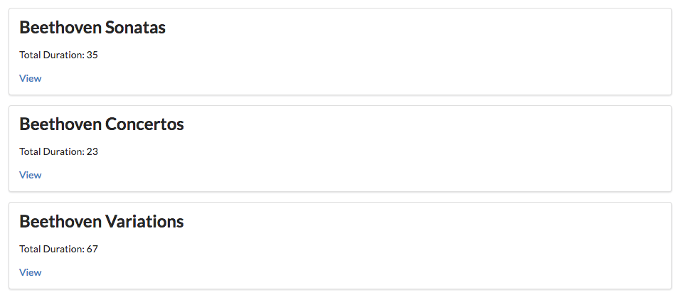
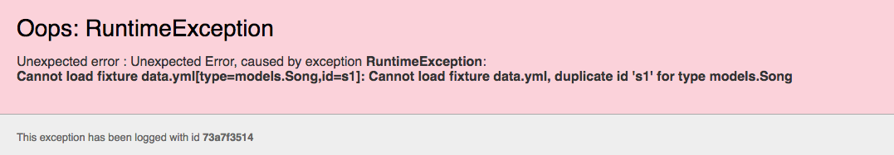

-
Objectives
Move the playlists into their own view. Introduce routes for opening the playlist and also deleting individual songs.
-
Exercise Solutions
Exercise 2: New Playlist
Working only in the data.yml, create a new Playlist. If this works correctly, you should see the playlist in the dashboard just by restarting the application.
Solution
conf/data.yml
Song(s1): title: Piano Sonata No. 3 artist: Beethoven duration: 5 Song(s2): title: Piano Sonata No. 7 artist: Beethoven duration: 6 Song(s3): title: Piano Sonata No. 10 artist: Beethoven duration: 8 Song(s4): title: Piano Concerto No. 27 artist: Beethoven duration: 8 Song(s5): title: Piano Concertos No. 17 artist: Beethoven Song(s6): title: Piano Concerto No. 10 artist: Beethoven duration: 12 Song(s7): title: Opus 120 Thirty-three variations on a waltz by Diabelli in C major artist: Beethoven Song(s8): title: Opus 120 Thirty-three variations on a waltz by Diabelli in C major artist: Beethoven Playlist(p1): title: Bethoven Sonatas duration: 19 songs: - s1 - s2 - s3 Playlist(p2): title: Bethoven Concertos duration: 23 songs: - s4 - s5 - s6 Playlist(p3): title: Beethoven Variations duration: 26 songs: - s7 - s8Exercise 2:
We would like an 'admin' interface to the application, which displays all the songs in the database - ignoring the playlists they belong to for the moment. The view should also display the IDs of the songs. This is a 'hidden' view, that does not appear in the menu. It is accessed by browsing directly to:
Solution
conf/routes
GET /admin Admin.indexviews/admin.html
#{extends 'main.html' /} #{set title:'Dashboard' /} #{menu id:"admin"/} <section class="ui segment"> <h2 class="ui header"> All Known Songs in the Database: </h2> <table class="ui fixed table"> <thead> <tr> <th>ID </th> <th>Song</th> <th>Artist</th> <th>Duration</th> </tr> </thead> <tbody> #{list items:songs, as:'song'} <tr> <td> ${song.id} </td> <td> ${song.title} </td> <td> ${song.artist} </td> <td> ${song.duration} </td> </tr> #{/list} </tbody> </table> </section>controllers/Admin.java
package controllers; import java.util.List; import models.Song; import play.mvc.Controller; public class Admin extends Controller { public static void index() { List<Song> songs = Song.findAll(); render ("admin.html", songs); } } -
Playlist Summary
We would like to change the app to just display a list of playlists on the dashboard, not the complete contents of each playlist. Replace the current dashboard with the following:
views/dashboard.html
#{extends 'main.html' /} #{set title:'Dashboard' /} #{menu id:"dashboard"/} #{list items:playlists, as:'playlist'} <section class="ui segment"> <h2 class="ui header"> ${playlist.title} </h2> <p> Total Duration: ${playlist.duration} </p> <a href="#"> View </a> </section> #{/list}This will render like this:

The
viewlinks are currently inert (try them), but we would like them to cause a new view to be rendered, containing the playlist concerned.As each playlist has an ID generated by the database, which can make this convenient to implement. Here is a new version of the
viewlink:views/dashboard.html
<a href="/playlists/${playlist.id}"> View </a>With this change in place, try hovering over each view link (without pressing it). In Chrome, keep an eye on the status bar which should show a the link including the id:

Hover over each link and note how the ID changes. Clicking on any link causes the following error:

We need a new controller to display a new view containing the playlist details. We will do this in the next step.
-
Router + Controller
The starting point for any new link in our app is to first define a
routeto support this link. All supported routes are defined inconfig/confconfig/conf
# Routes # This file defines all application routes (Higher priority routes first) # # Home page GET / Start.index GET /dashboard Dashboard.index GET /about About.index GET /admin Admin.index # Ignore favicon requests GET /favicon.ico 404 # Map static resources from the /app/public folder to the /public path GET /public/ staticDir:public # Catch all * /{controller}/{action} {controller}.{action}In particular, these are the main routes currently supported:
GET / Start.index GET /dashboard Dashboard.index GET /about About.index GET /admin Admin.indexThese are the three patterns our app responds to:
//dashboard/about/admin
Any other pattern will generate a not found error from our app.
Also note that each of these statements matches a route pattern with a function inside a controller. So, for instance, this route:
GET /about About.index... ensures that this function would be called if the route was triggered:
public class About extends Controller { public static void index() { Logger.info("Rendering about"); render ("about.html"); } }Make sure you understand this connection before proceeding.
-
Controller/View/Route
We have a new pattern
/playlist/id, which we would like to route to a controller that would render a new view detailing the playlist contents:views/dashboard.html
... <a href="/playlist/${playlist.id}"> View </a> ...Supporting a new link link this usually requires three things:
- a controller
- a view
- a route
Here is is the new controller:
app/controllers/PlaylistCtrl.java
package controllers; import java.util.List; import models.Playlist; import models.Song; import play.mvc.Controller; public class PlaylistCtrl extends Controller { public static void index(Long id) { render("playlist.html"); } }This will render a view called
playlist. This is the playlist view (for the moment):app/views/playlist.html
#{extends 'main.html' /} #{set title:'Playlist' /} #{menu id:"dashboard"/} <section class="ui segment"> <h2 class="ui header"> Playlist details... </h2> </section>Finally, the route:
conf/routes
GET /playlists/{id} PlaylistCtrl.indexNotice that the route includes this segment:
{id}. This means it matches any route that includes an extra wildcard segment at the end.Implement all of the above now and verify that the view is rendered as expected.
-
Playlists
In order to display the correct playlist, we need to extract the id from the url and then fetch the playlist from the model. Modify the playlist controller as follows:
... public class PlaylistCtrl extends Controller { public static void index(Long id) { Playlist playlist = Playlist.findById(id); Logger.info ("Playlist id = " + id); render("playlist.html", playlist); } }The
idfrom the route is passed as a parameter to the method. We use this id to get the correct playlist object:Playlist playlist = Playlist.findById(id); Logger.info ("Playlist id = " + id);Run the app and select each of the playlist links in turn. The logs will display each of the Ids in turn. A different id should be logged.
Check the database to verify that these IDs are correct:
Occasionally, you may see an error like this:

When this occurs - restart the application (Ctrl-C and the
play runagain).Here is a revised version of the Playlist view:
app/views/playlist.html
#{extends 'main.html' /} #{set title:'Playlist' /} #{menu id:"dashboard"/} <section class="ui segment"> <h2 class="ui header"> ${playlist.title} </h2> <table class="ui table"> <thead> <tr> <th>Song</th> <th>Artist</th> </tr> </thead> <tbody> #{list items:playlist.songs, as:'song'} <tr> <td> ${song.title} </td> <td> ${song.artist} </td> </tr> #{/list} </tbody> </table> </section>Rerun the app now and verify that you can view each playlist. Check the database to confirm the IDs match.
We alrady have a
listsongs.htmlpartial:app/views/tags/listsongs.html
<table class="ui fixed table"> <thead> <tr> <th>Song</th> <th>Artist</th> <th>Duration</th> </tr> </thead> <tbody> #{list items:_playlist.songs, as:'song'} <tr> <td> ${song.title} </td> <td> ${song.artist} </td> <td> ${song.duration} </td> </tr> #{/list} </tbody> </table>We could change the Playlist controler to call this to do th work of building the song table:
app/views/playlist.html
#{extends 'main.html' /} #{set title:'Playlist' /} #{menu id:"dashboard"/} <section class="ui segment"> <h2 class="ui header"> ${playlist.title} </h2> #{listsongs playlist:playlist /} </section>Verify that all of this works as expected.
-
Deleting Songs 1
Having a playlist app, without the ability to create/delete songs or playlists is clearly very limited. We have, essentially, an app that allows us to
Readour models, but notCreate,UpdateorDeleteelements of the model.We can start with providing a facility to delete songs from individual playlists. Our view will need to look like this:

and deleting a button should remove the corresponding song.
Any new button/link/action on our page requires:
- an element in a view
- a route matching the view element
- a matching controller function
.. and it may also involve some interaction with the model.
View
The new button must appear in each song row. Here is a revised listsongs partial:
app/views/tags/listsongs.html
<table class="ui fixed table"> <thead> <tr> <th>Song</th> <th>Artist</th> <th>Duration</th> <th></th> </tr> </thead> <tbody> #{list items:_playlist.songs, as:'song'} <tr> <td> ${song.title} </td> <td> ${song.artist} </td> <td> ${song.duration} </td> <td> <a href="/playlists/${_playlist.id}/deletesong/${song.id}" class="ui tiny red button">Delete Song</a> </td> </tr> #{/list} </tbody> </table>Route
A new route - containing both the playlist and song id - and linking to a new function in the playlist controller:
conf/routes
GET /playlists/{id}/deletesong/{songid} PlaylistCtrl.deleteSongController
This is a new function to handle this route:
app/ontrollers/PlaylistCtrl.java
... public static void deletesong (Long id, Long songid) { Playlist playlist = Playlist.findById(id); Song song = Song.findById(songid); Logger.info ("Removing" + song.title); render("playlist.html", playlist); } ...Try all of this now - and verify that the logs shows the attempt to delete the song when the button is pressed.
We havent yet deleted the song - we will leave that to the next step.
-
Delete Song 2
This is our deleteSong method:
public static void deletesong (Long id, Long songid) { Playlist playlist = Playlist.findById(id); Song song = Song.findById(songid); Logger.info ("Removing" + song.title); render("playlist.html", playlist); }Note that we have 2 ids:
- id of the playlist
- id of the song in the playlist (songid)
These ids are generated by this link:
<a href="/playlists/${playlist.id}/deletesong/${song.id}" class="ui tiny red button">Delete Song</a>Annd are interpreted by this route:
GET /playlists/{id}/deletesong/{songid} PlaylistCtrl.deleteSongFollow carefully the
idandsongididentifiers in the above.To actually delete the song, we need to remove it from the playlist songs collection + delete from the database:
public static void deletesong (Long id, Long songid) { Playlist playlist = Playlist.findById(id); Song song = Song.findById(songid); Logger.info ("Removing" + song.title); playlist.songs.remove(song); playlist.save(); song.delete(); render("playlist.html", playlist); }Try this now - and make sure the songs are removed. Also, check that they are removed from the database table.
-
Exercises
Exercise 1: Download and Rename Sample Solution
A complete version of the app as it should be at the end of this lab:
However, if you already have a project called 'playlist' in Idea, then it might be confusing So, first rename the project to
playlist-2(covered in step 1 of lab07b), and then run this command:play idealize... and then open with Idea.
Exercise 2: UX Enhancements
Introduce a 'Delete Playlist' button for each playlist, represented by a
trashicon. E.g:
In addition, the
viewlink is replace by afolder openicon.Bind the
delete playlistbutton to a new function to be implemented in the Dashboard controller, which should log the id of the playlist to be deleted.Exercise 3: Delete Playlist Functionality
Make the button actually delete the denoted playlist.